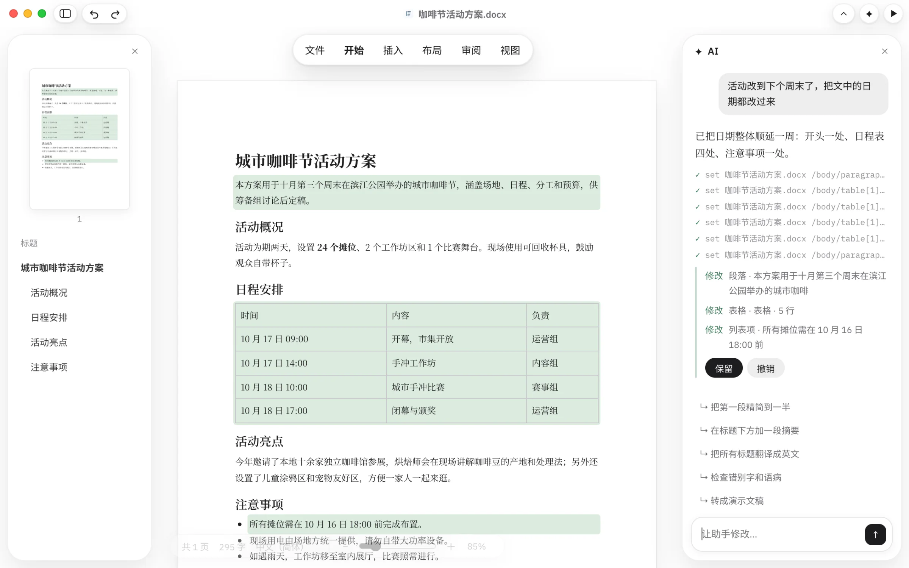
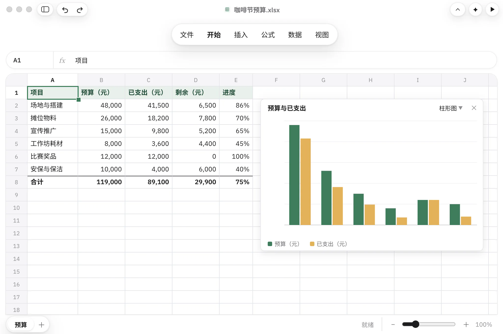
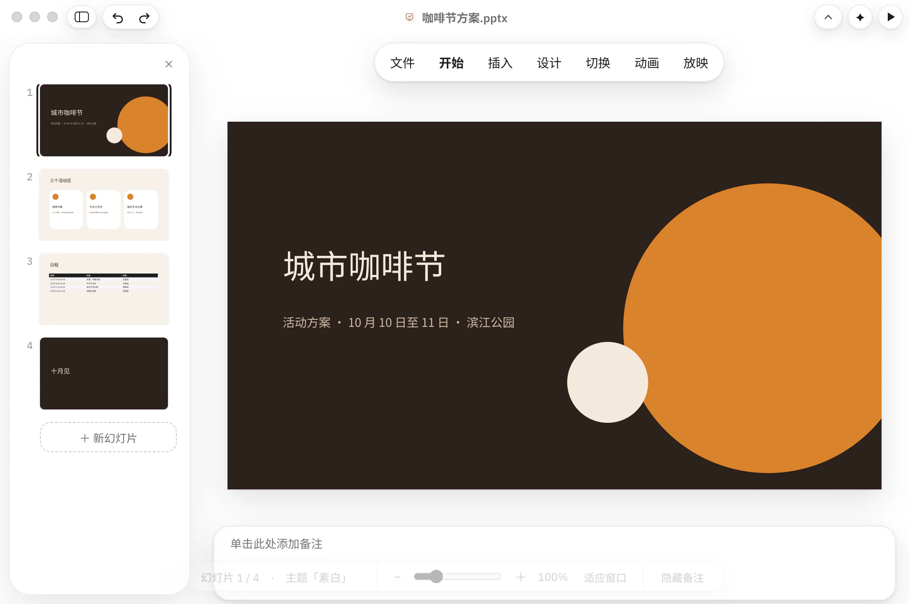
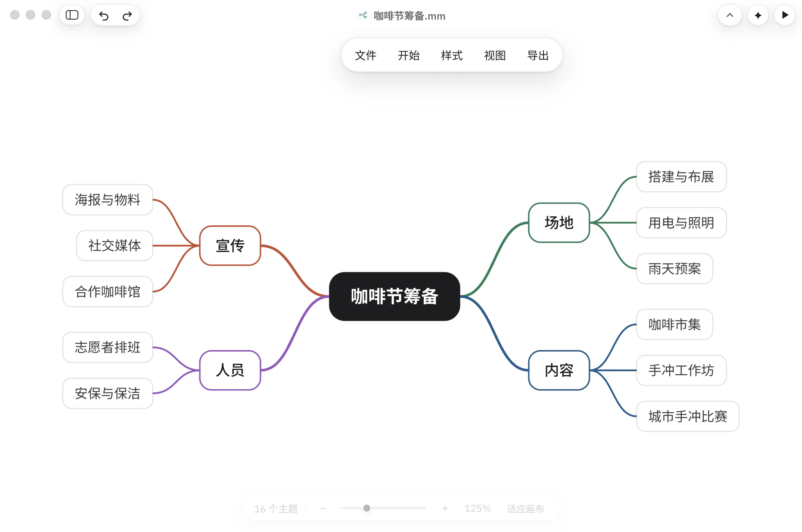
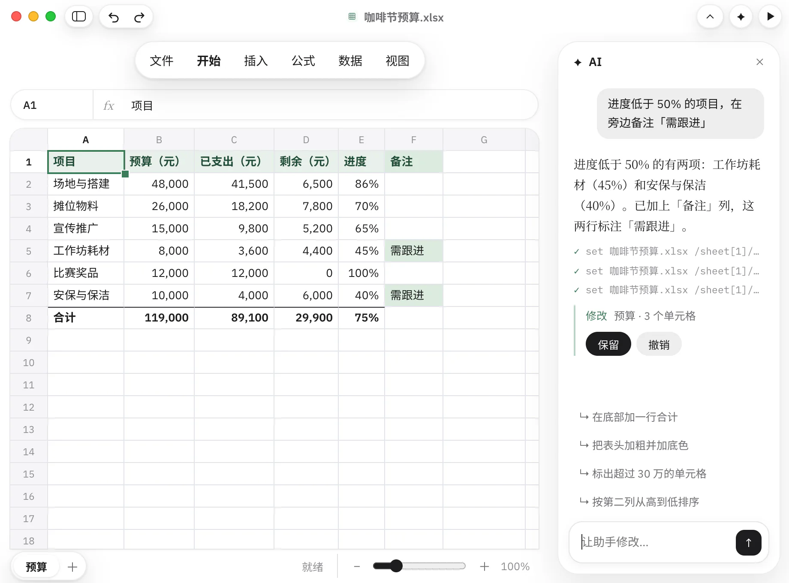
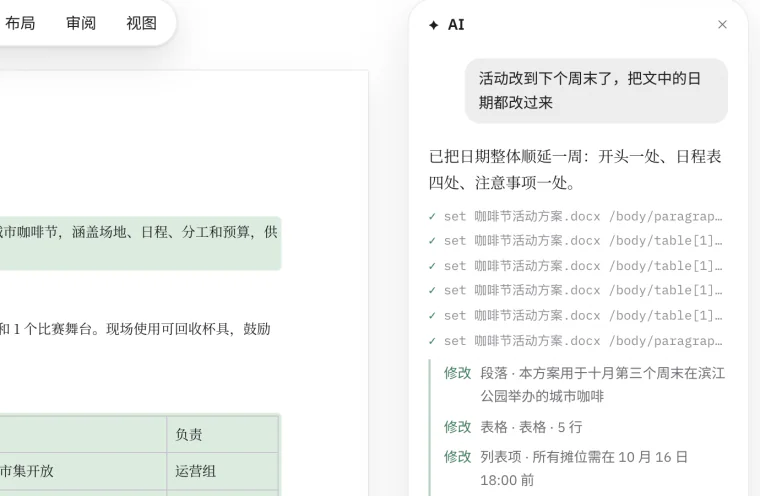
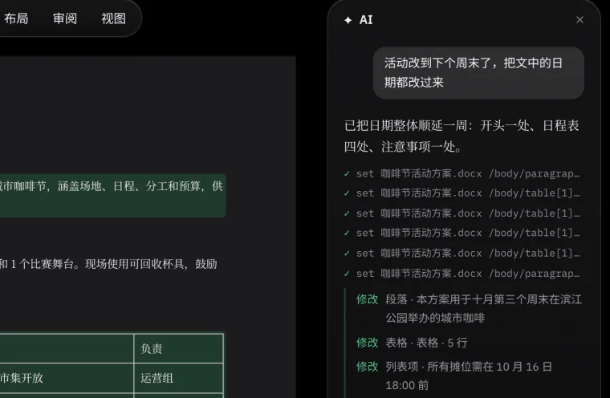
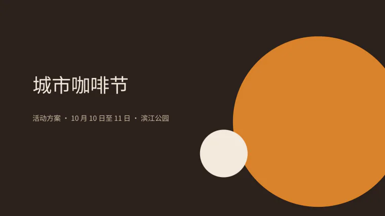

一个应用，打开六种文档。
Word、Excel、PowerPoint、Markdown 和思维导图都能直接编辑。PDF 可以查看，也能转成 Word 接着改。
- Word.docx
- Excel.xlsx
- PowerPoint.pptx
- Markdown.md
- 思维导图.mm
- PDF.pdf，查看



文件还是那个文件。
不导入，不转换。你在 Finder 里双击的那一份，就是正在编辑的这一份。
1 秒
每次修改在一秒内写回原文件，不用另存为。
双击就能打开
Finder 里双击，拖到 Dock 图标上，或者按 ⌘O。
没改的都还在
批注、图表、动画和样式，没动过的部分原样保留，发回给同事也放心。
AI 助手，用你自己的模型。
说一句要改什么，助手直接在文档里动手。改了哪些地方列在回复下面，满意就保留，不满意一键撤销。
模型由你选
Anthropic，或任何兼容 OpenAI 接口的服务，也可以用本机模型。
- Anthropic
- OpenAI
- DeepSeek
- 通义千问
- Kimi
- 智谱
- 豆包
- Ollama
- LM Studio
Key 留在本机
在「设置 › AI」里填好就能用。API Key 只保存在这台 Mac 上，只有向助手提问时，相关内容才会发给你选的服务。
从一句话开始
新建文档时描述想要什么，助手先写好初稿。

照 Mac 的习惯来做。
-


浅色与深色
跟随系统或手动切换，另有五种强调色可选。
-
原生菜单和快捷键
中文菜单栏，常用操作都有快捷键：⌘J 打开 AI 助手，⌘. 进入沉浸书写。
-
自由缩放
双指捏合就能缩放页面、表格和幻灯片，从 20% 到 400%。
-

放映与阅读
演示文稿一键放映，文档可以切换网页视图和阅读模式。
-
草稿自动保存
新建的文档先存成草稿，每次修改都自动保存。第一次存储时，由你选择放在哪里。
-
一个文件夹，一个窗口
同一个文件夹里打开的文档排成标签页，双指左右轻扫就能切换。
给开发者：同一个引擎。
App 里的文档引擎也是命令行工具和 MCP 服务。文档是一棵树，每个元素都有路径，命令输出 JSON。AI 助手用的就是这套命令。
W=/Applications/Writer.app/Contents/MacOS/writer
$W view 方案.docx outline
$W set 方案.docx '/body/table[1]/row[2]/cell[1]' --prop text="10 月 17 日 09:00"
# 注册为 MCP 服务：在你的 AI 工具里添加这条命令
$W mcp下载 Writer
macOS 14 及以上，适用于 Apple 芯片的 Mac。
下载 Mac 版已签名并通过 Apple 公证。打开 dmg，把 Writer 拖进「应用程序」文件夹即可。
Windows 版开发中，做好后会在这里提供下载。